| operation mode M1 | BUCB measuring | UCB=100 V | |
| operation mode M2 | BUCE measuring | UCE=0...20 V | |
| operation mode M3 | IEB0 measuring | UEB=0...20 V | |
| operation mode M4 | ICB0 measuring | UCB=0...20 V | |
| operation mode M5 | ICE0 measuring | UCE=0...20 V | |
| operation mode M6 | IB/UBE characteristic curve recording | UB=0...1 V | UC=0...20 V |
| operation mode M7 | IC/UCE characteristic curve recording | UB=0...1 V | UC=0...20 V |
| operation mode M8 | pairing | UB=0...1 V | UC=0...20 V |
| 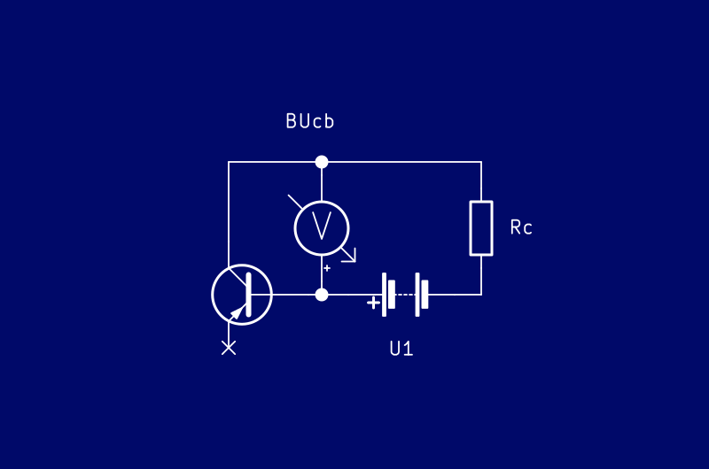 | 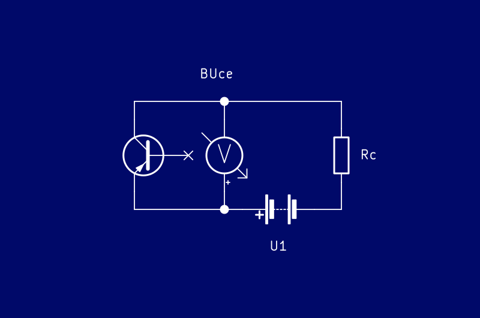 | 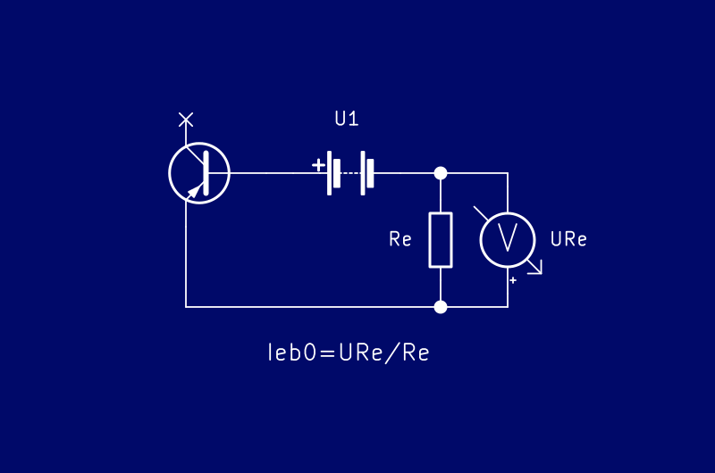 |
| Measuring collector-emitter breakdown voltage | Measuring collector-base breakdown voltage | Measuring emitter-base cutoff current |
| 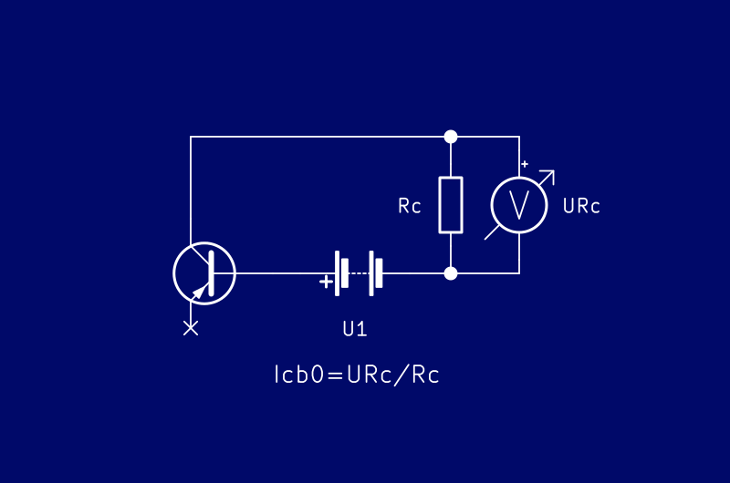 | 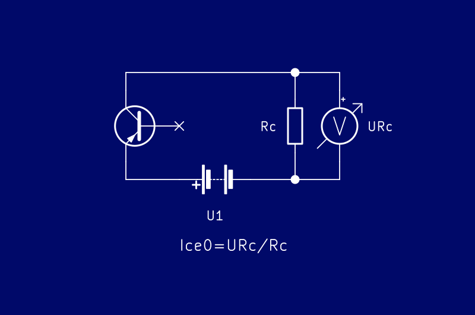 | 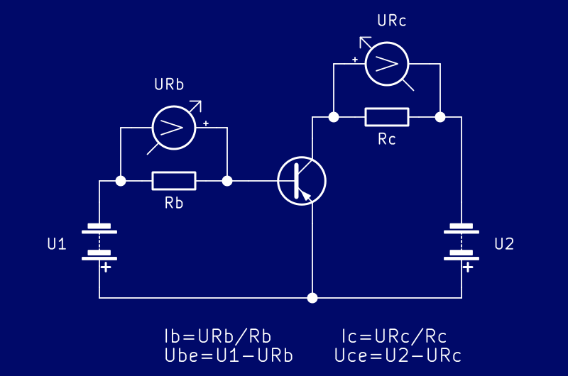 |
| Measuring collector-base cutoff current | Measuring collector-emitter cutoff current | Measuring and plotting Ube/Ib or Uce/Ic characteristic curve |
| 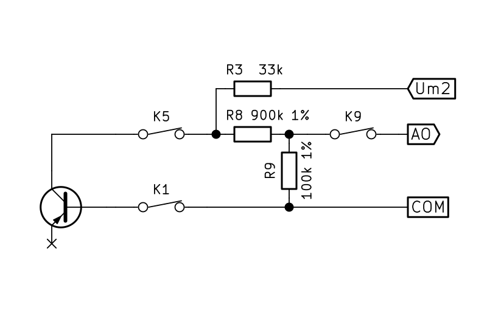 | 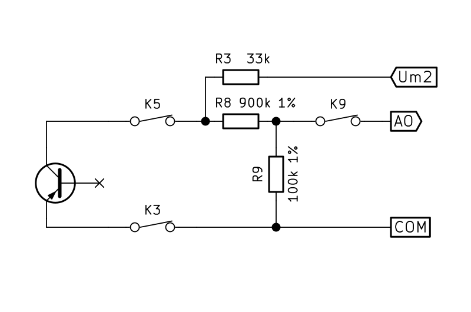 | 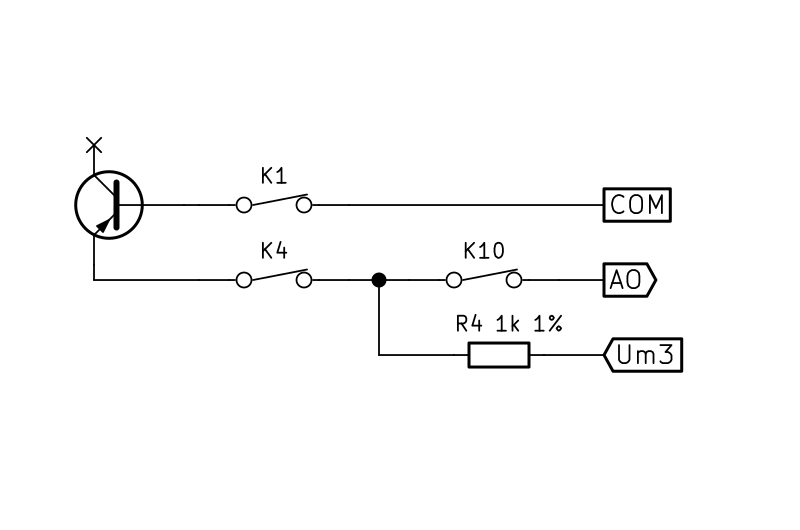 |
| Measuring collector-emitter breakdown voltage | Measuring collector-base breakdown voltage | Measuring emitter-base cutoff current |
| 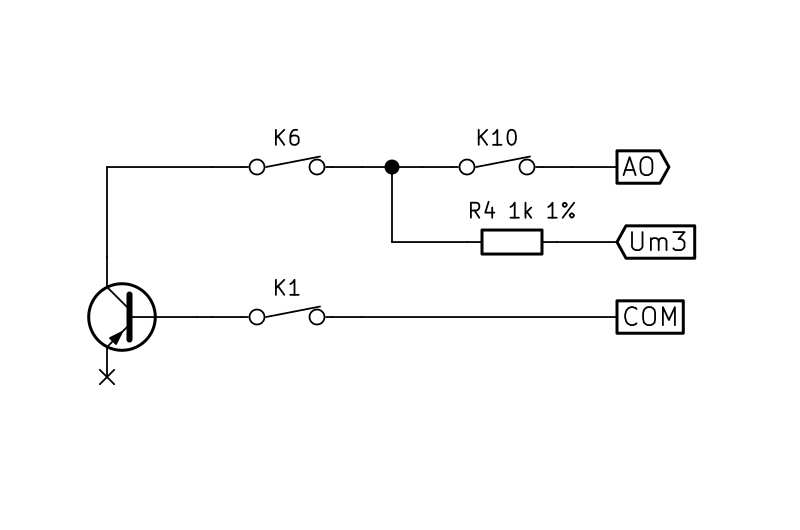 | 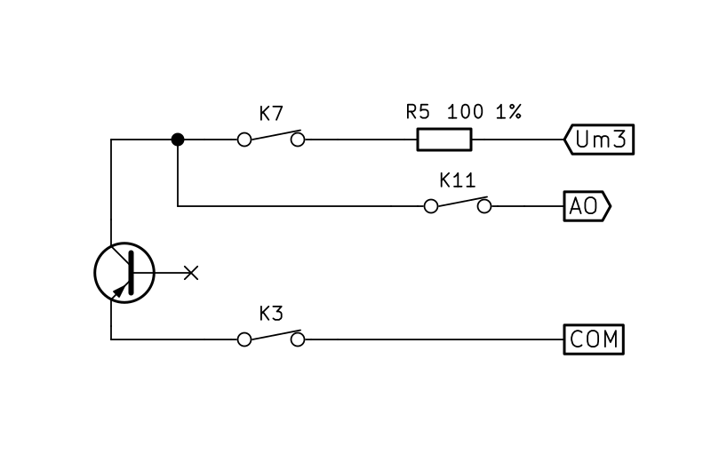 | 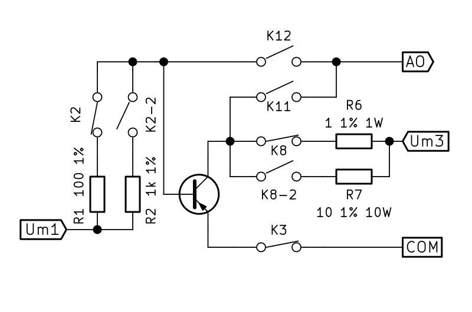 |
| Measuring collector-base cutoff current | Measuring collector-emitter cutoff current | Measuring and plotting Ube/Ib or Uce/Ic characteristic curve |